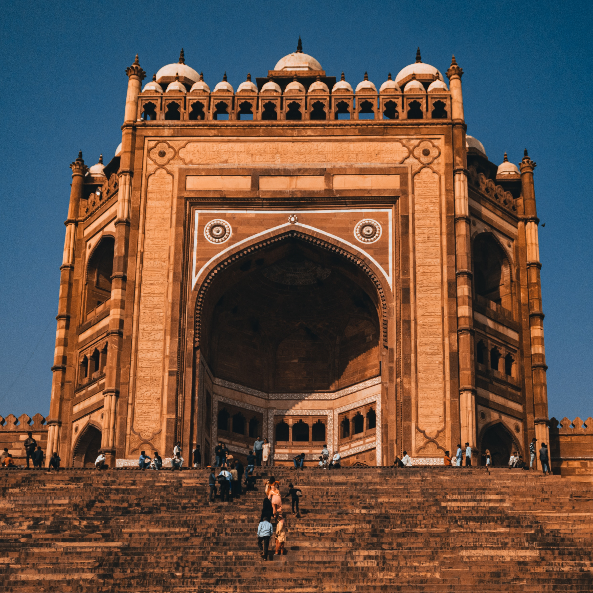

IndiaGate
The India Gate (formerly known as the All India War Memorial) is a war memorial located astride the Rajpath, on the eastern edge of the "ceremonial axis" of New Delhi, formerly called Kingsway. It stands as a memorial to 84,000 soldiers of the British Indian Army who died in between 1914 and 1921 in the First World War, in France, Flanders, Mesopotamia, Persia, East Africa, Gallipoli and elsewhere in the Near and the Far East, and the Third Anglo-Afghan War. 13,300 servicemen's names, including some soldiers and officers from the United Kingdom, are inscribed on the gate.
FatehpurSikri
Fatehpur Sikri is a town in the Agra District of Uttar Pradesh, India.
Situated 35.7 killometers from the district headquarters Agra,[3] Fatehpur Sikri itself was
founded as the capital of Mughal Empire in 1571 by Emperor Akbar.
The name of the city is derived from the village called Sikri which occupied the spot
before.Archaeological Survey of India (ASI) excavation from 1999 to 2000 indicated that there was
a habitation, temples and commercial centres here before Akbar built his capital.
The region was settled by Sungas following their expansion. It was controlled by
Sikarwar Rajputs from 7th to 16th century CE till the Battle of Khanwa (1527).
Mysore Palace
The Mysore Palace, also known as Amba Vilas Palace, is a historical palace and a royal residence (house). It is located in Mysore, Karnataka. It used to be the official residence of the Wadiyar dynasty and the seat of the Kingdom of Mysore. The palace is in the centre of Mysore, and faces the Chamundi Hills eastward. Mysore is commonly described as the 'City of Palaces', and there are seven palaces including this one. However, the Mysore Palace refers specifically to the one within the new fort.
Jallianwalabagh
Jallianwala Bagh is a historic garden and ‘memorial of national importance’ close to the Golden Temple complex in Amritsar, Punjab, India, preserved in the memory of those wounded and killed in the Jallianwala Bagh Massacre that occurred on the site on the festival of Baisakhi, 13 April 1919. The 7-acre (28,000 m2) site houses a museum, gallery and several memorial structures. It is managed by the Jallianwala Bagh National Memorial Trust. It was renovated between 2019 and 2021.
KonarkSunTemple
Konark Sun Temple is a 13th-century CE (year 1250) Sun temple at Konark about 35 kilometres (22 mi) northeast from Puri city on the coastline in Puri district, Odisha, India.The temple is attributed to king Narasimhadeva I of the Eastern Ganga dynasty about 1250 CE. Dedicated to the Hindu Sun God Surya, what remains of the temple complex has the appearance of a 100-foot (30 m) high chariot with immense wheels and horses, all carved from stone. Once over 200 feet (61 m) high,much of the temple is now in ruins, in particular the large shikara tower over the sanctuary.
Humayun's Tomb
Humayun's tomb (Hindustani: Maqbara-i Humayun) is the tomb of the Mughal Emperor Humayun in Delhi, India. The tomb was commissioned by Humayun's chief consort, Empress Bega Begum (also known as Haji Begum), on patronage of her step-son Akbar, in 1558, and designed by Mirak Mirza Ghiyas and his son, Sayyid Muhammad, Persian architects chosen by her.[9][10] It was the first garden-tomb on the Indian subcontinent,and is located in Nizamuddin East, Delhi, India, close to the Dina-panah Citadel, also known as Purana Qila (Old Fort), that Humayun found in 1533.